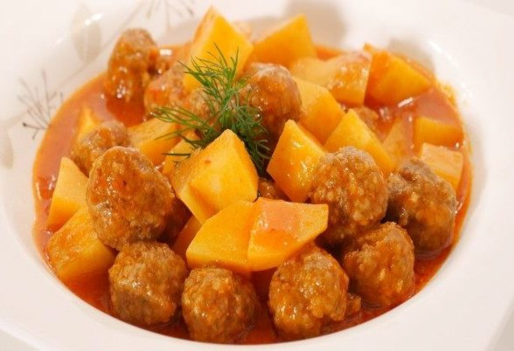

Tam Kıvamında: Dağılmayan Sulu Köfte Tarifi

Sulu köfteyi hepimiz severiz. O minik minik köfteleri afiyetle yemenin keyfi paha biçilemez. Ama sulu köftenin belki de en büyük sorunu pişerken dağılabiliyor olması. Şimdi bu dağılma sorununu tamamen ortadan kaldıracak minik püf noktasıyla size ufuk açacak, hiç dağılmayan sulu köfteler yapmanızı sağlayacak bir tarif geliyor. Karşınızda dağılmayan sulu köfte tarifi. Yanında tane tane dökülen bir pilavla şahane bir akşam yemeğine dönüşebilen dağılmayan sulu köfte tarifi, bir yiyenin lezzetine hayran kalacağız cinsten. Büyük küçük yerken herkesin çok seveceğine de eminiz. Haydi şimdiden afiyetler olsun.
TARİF=Muhammet Usta